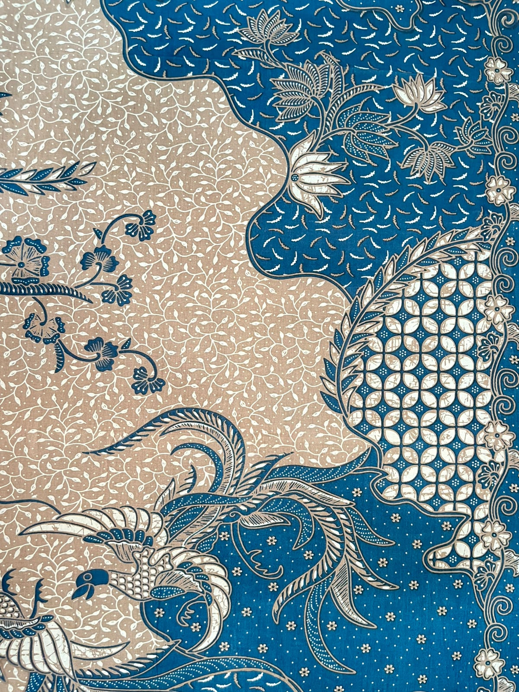
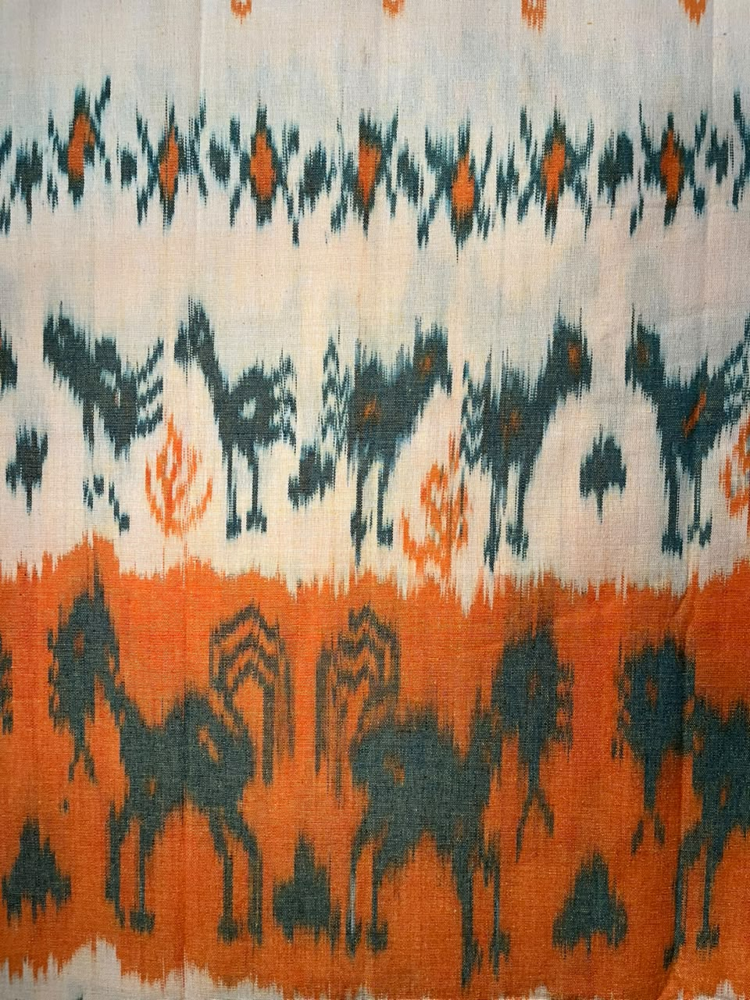
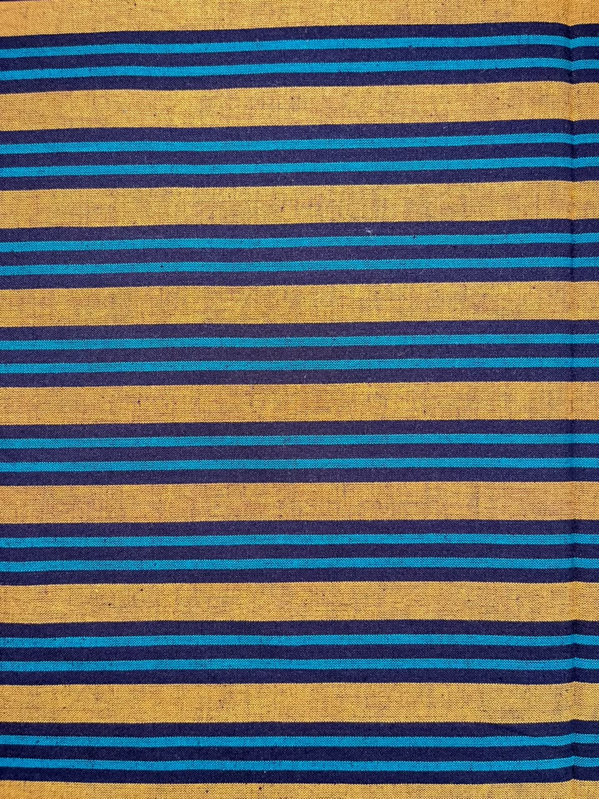

Batik
Kain tradisional dengan teknik perintang malam dan motif penuh makna.
Keanggunan warisan wastra Indonesia, dihadirkan kembali untuk setiap kisah dan generasi.
PENAWARAN PILIHAN
Temukan penawaran istimewa untuk koleksi wastra pilihan. Lihat promo yang sedang aktif atau tanyakan penawaran terbaru langsung kepada tim kami.
Penawaran khusus akan tampil di sini ketika diaktifkan oleh tim GoO Ninks. Untuk informasi harga saat ini, hubungi admin.
Promo mengikuti ketentuan yang berlaku. Harga akhir dan penggunaan kode dikonfirmasi admin; diskon tidak otomatis diterapkan saat checkout.
THE EDIT / 2026
Eksplorasi siluet modern dengan sentuhan tekstil tradisional Indonesia.
Coba kata kunci atau rentang harga lain.
OUR FABRIC STORIES
Wastra merupakan identitas tekstil tradisional Nusantara. Setiap kain merekam nilai budaya, keterampilan tangan, dan kisah daerah asalnya.

Kain tradisional dengan teknik perintang malam dan motif penuh makna.

Kain hasil susunan benang pada alat tenun tradisional, identitas tiap daerah.

Kain bergaris khas Jawa yang merepresentasikan harmoni dan kesederhanaan.